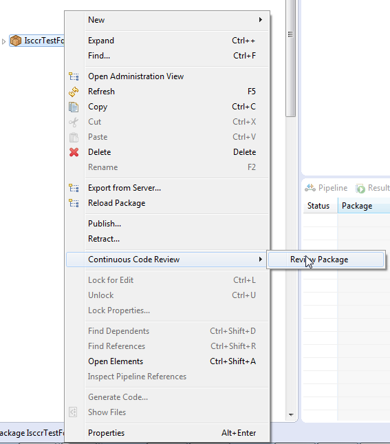

Eclipse Plugin
Configuration
The configuration of ISCCR can be found within the menu under window/preferences/Continuous Code Review. Within these settings you can
- Specify the location to the code-review execution engine
- Provide a list of package prefixes that are allowed to be reviewed
- Provide any custom JVM parameters
- Determine what to show (failure/warning/success) on review
- Determine what the default action is when double clicking on a review item
This looks like the following:
Review Individual Package
-
To review a package, assuming the prefix has been added within the configuration, right click on the package and select Continuous Code Review / Review Package as shown below: 
-
Once selected, if not already visible, the review results panel will open and inform that the review is currently in process
-
On completion of the review, the results will be displayed
-
Double clicking on a result (depending on your default configuration) the detail will be shown
-
Selecting OK will take you to the asset directly for editing (where possible)
-
Additionally you can control the results visibility in the results pane by dropping down the view panel
Review all Packages
- To review all packages, right click on the Integration Server and select Continuous Code Review/Review All Packages as shown below:
Note
Only packages that match the prefixes specified in the configuration will be included in the review